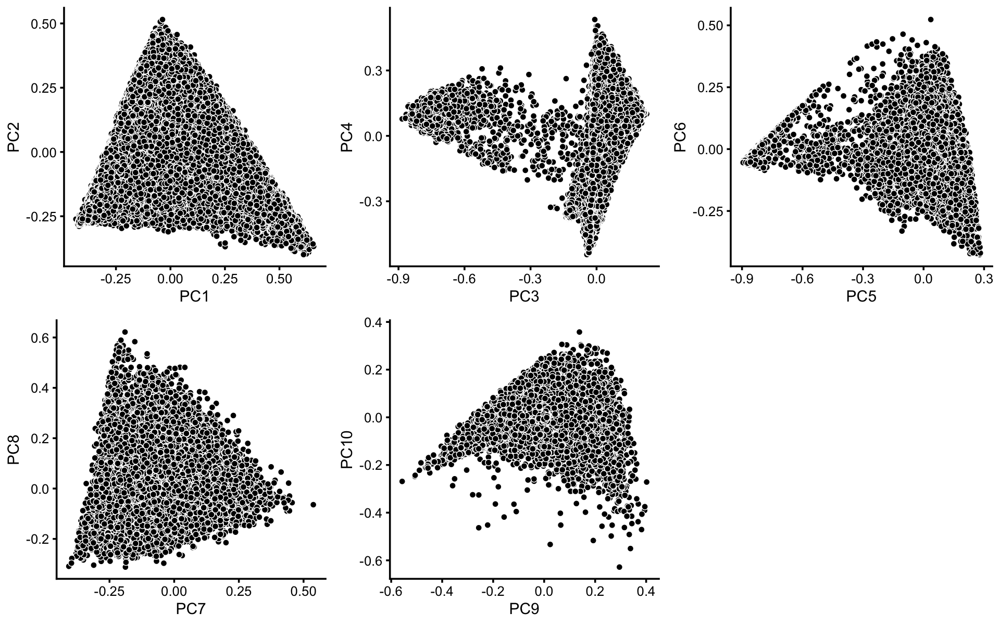
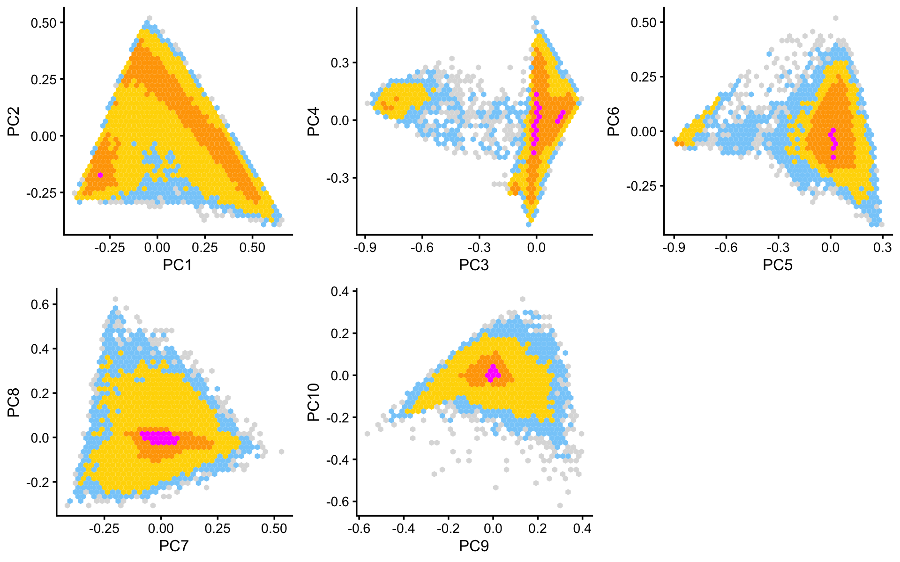
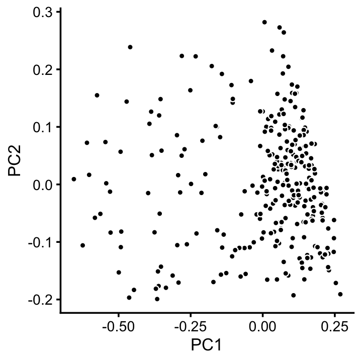
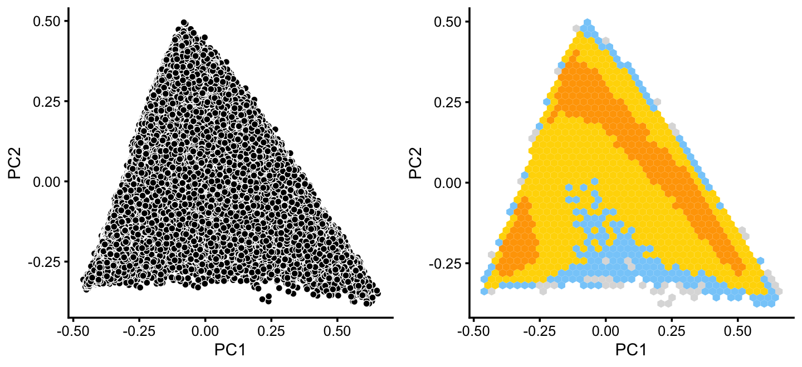
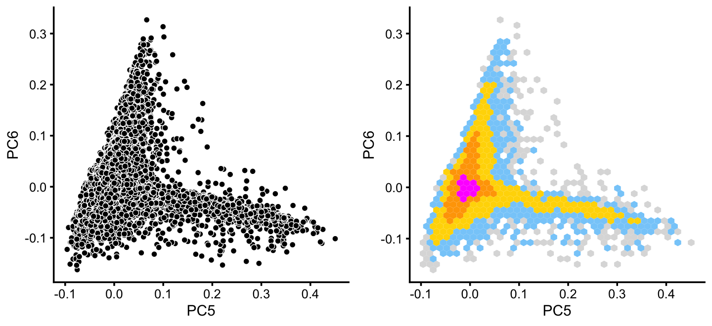
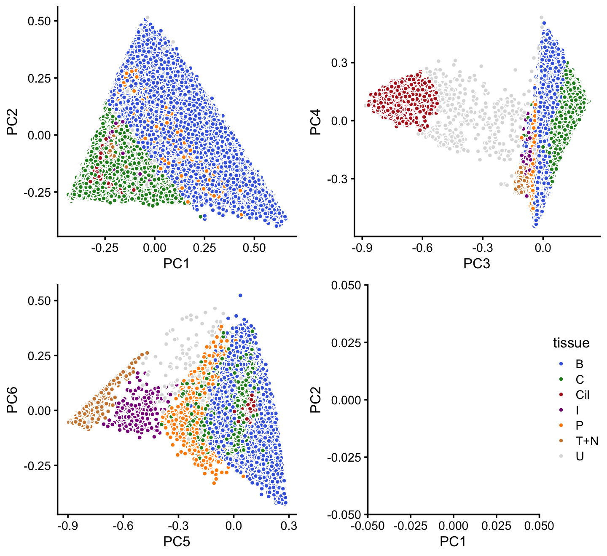
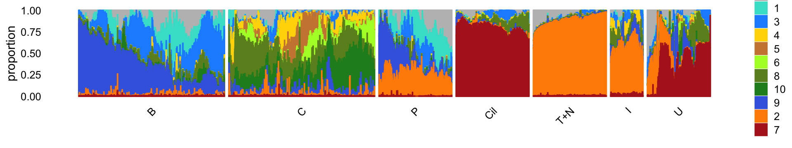
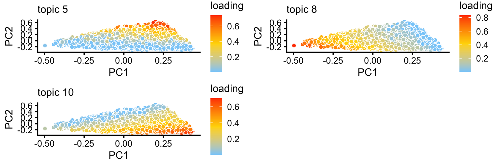
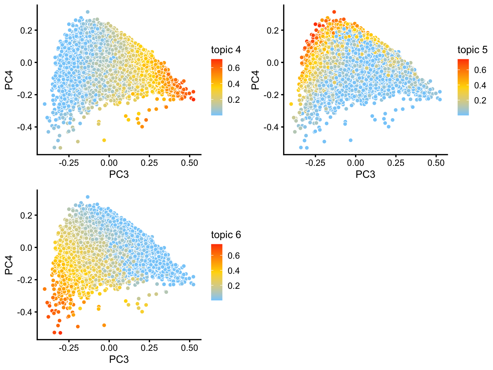
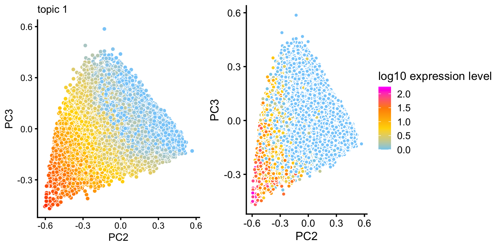

Last updated: 2020-09-27
Checks: 7 0
Knit directory: single-cell-topics/analysis/
This reproducible R Markdown analysis was created with workflowr (version 1.6.2.9000). The Checks tab describes the reproducibility checks that were applied when the results were created. The Past versions tab lists the development history.
Great! Since the R Markdown file has been committed to the Git repository, you know the exact version of the code that produced these results.
Great job! The global environment was empty. Objects defined in the global environment can affect the analysis in your R Markdown file in unknown ways. For reproduciblity it’s best to always run the code in an empty environment.
The command set.seed(1) was run prior to running the code in the R Markdown file. Setting a seed ensures that any results that rely on randomness, e.g. subsampling or permutations, are reproducible.
Great job! Recording the operating system, R version, and package versions is critical for reproducibility.
Nice! There were no cached chunks for this analysis, so you can be confident that you successfully produced the results during this run.
Great job! Using relative paths to the files within your workflowr project makes it easier to run your code on other machines.
Great! You are using Git for version control. Tracking code development and connecting the code version to the results is critical for reproducibility.
The results in this page were generated with repository version 11192fc. See the Past versions tab to see a history of the changes made to the R Markdown and HTML files.
Note that you need to be careful to ensure that all relevant files for the analysis have been committed to Git prior to generating the results (you can use wflow_publish or wflow_git_commit). workflowr only checks the R Markdown file, but you know if there are other scripts or data files that it depends on. Below is the status of the Git repository when the results were generated:
Ignored files:
Ignored: data/droplet.RData
Ignored: data/pbmc_68k.RData
Ignored: data/pbmc_purified.RData
Ignored: data/pulseseq.RData
Ignored: output/droplet/diff-count-droplet.RData
Ignored: output/droplet/fits-droplet.RData
Ignored: output/droplet/rds/
Ignored: output/pbmc-68k/fits-pbmc-68k.RData
Ignored: output/pbmc-68k/rds/
Ignored: output/pbmc-purified/fits-pbmc-purified.RData
Ignored: output/pbmc-purified/rds/
Ignored: output/pulseseq/diff-count-pulseseq.RData
Ignored: output/pulseseq/fits-pulseseq.RData
Ignored: output/pulseseq/rds/
Untracked files:
Untracked: analysis/clustering-pulseseq.rds
Unstaged changes:
Modified: analysis/plots_tracheal_epithelium.Rmd
Note that any generated files, e.g. HTML, png, CSS, etc., are not included in this status report because it is ok for generated content to have uncommitted changes.
These are the previous versions of the repository in which changes were made to the R Markdown (analysis/clusters_pulseseq.Rmd) and HTML (docs/clusters_pulseseq.html) files. If you’ve configured a remote Git repository (see ?wflow_git_remote), click on the hyperlinks in the table below to view the files as they were in that past version.
| File | Version | Author | Date | Message |
|---|---|---|---|---|
| Rmd | 11192fc | Peter Carbonetto | 2020-09-27 | workflowr::wflow_publish(“clusters_pulseseq.Rmd”) |
| html | 7d78e71 | Peter Carbonetto | 2020-09-27 | Resized a figure in clusters_pulseseq analysis. |
| Rmd | a853b60 | Peter Carbonetto | 2020-09-27 | workflowr::wflow_publish(“clusters_pulseseq.Rmd”) |
| html | a67196a | Peter Carbonetto | 2020-09-27 | Use pca_plot_with_counts in clusters_pulseseq analysis. |
| Rmd | c2a357c | Peter Carbonetto | 2020-09-27 | workflowr::wflow_publish(“clusters_pulseseq.Rmd”) |
| html | 310ef96 | Peter Carbonetto | 2020-09-22 | Fixed up figure dimensions in clusters_pulseseq analysis. |
| Rmd | eee6fed | Peter Carbonetto | 2020-09-22 | workflowr::wflow_publish(“clusters_pulseseq.Rmd”) |
| html | 56d99a3 | Peter Carbonetto | 2020-09-22 | Added Structure plot and PCA plot to clusters_pulseseq analysis. |
| Rmd | ec4a70a | Peter Carbonetto | 2020-09-22 | workflowr::wflow_publish(“clusters_pulseseq.Rmd”) |
| html | 6e4ccdd | Peter Carbonetto | 2020-09-22 | Made a few minor improvements to the clusters_pulseseq analysis. |
| Rmd | 62fef5a | Peter Carbonetto | 2020-09-22 | workflowr::wflow_publish(“clusters_pulseseq.Rmd”) |
| Rmd | 5af46f1 | Peter Carbonetto | 2020-09-20 | Working on Structure plot for droplet data. |
| Rmd | 6a7b9cb | Peter Carbonetto | 2020-09-19 | Minor edit to clusters_pulseseq.Rmd. |
| Rmd | 04e1761 | Peter Carbonetto | 2020-09-19 | A couple minor edits to the R Markdown. |
| html | 7489099 | Peter Carbonetto | 2020-09-18 | Re-built clusters_pulseseq page after merge conflict. |
| html | 942486b | Peter Carbonetto | 2020-09-18 | Fixing merge issue. |
| html | d052ec8 | Peter Carbonetto | 2020-09-18 | Build site. |
| html | 65f104e | Peter Carbonetto | 2020-09-18 | Adjusted figure dimensions in clusters_pulseseq analysis. |
| Rmd | 60fd1ae | Peter Carbonetto | 2020-09-18 | workflowr::wflow_publish(“clusters_pulseseq.Rmd”) |
| html | 775fb91 | Peter Carbonetto | 2020-09-18 | Added step to save results in clusters_pulseseq analysis. |
| Rmd | 9cea9db | Peter Carbonetto | 2020-09-18 | workflowr::wflow_publish(“clusters_pulseseq.Rmd”) |
| html | e62fb43 | Peter Carbonetto | 2020-09-18 | Refined clustering of pulseseq data. |
| Rmd | ded741c | Peter Carbonetto | 2020-09-18 | workflowr::wflow_publish(“clusters_pulseseq.Rmd”) |
| html | 4b4b233 | Peter Carbonetto | 2020-09-18 | Make some improvements to clusters_pulseseq analysis. |
| html | 571b311 | Peter Carbonetto | 2020-09-16 | Build site. |
| Rmd | d2cb602 | Peter Carbonetto | 2020-09-16 | workflowr::wflow_publish(“clusters_pulseseq.Rmd”) |
| html | 13a5956 | Peter Carbonetto | 2020-09-16 | Built clusters_pulseseq page. |
| Rmd | 5e0ee23 | Peter Carbonetto | 2020-09-16 | Completed first rough draft of clustering in clusters_pulseseq.Rmd. |
| Rmd | 337d6fc | Peter Carbonetto | 2020-09-16 | Added clusters identified in PCs 5 and 6 of k=11 pulse-seq fit. |
| Rmd | c0a27bd | Peter Carbonetto | 2020-09-16 | Added clustering of pulseseq data along PCs 3 and 4. |
| html | e7383b2 | Peter Carbonetto | 2020-09-16 | Produced first rendering of clusters_pulseseq analysis. |
| Rmd | 1dd20d4 | Peter Carbonetto | 2020-09-16 | workflowr::wflow_publish(“clusters_pulseseq.Rmd”) |
| Rmd | da9ac09 | Peter Carbonetto | 2020-09-16 | Added hexbin plots to clusters_pulseseq analysis. |
| Rmd | 485639a | Peter Carbonetto | 2020-09-16 | Working on clusters_pulseseq analysis. |
| Rmd | c8dd3af | Peter Carbonetto | 2020-09-16 | Implemented basic_pca_plot; improved labeled_pca_plot function. |
Here we perform PCA on the topic proportions to identify clusters in the pulse-seq data.
Load the packages used in the analysis below, as well as additional functions that we will use to generate some of the plots.
library(Matrix)
library(dplyr)
library(fastTopics)
library(ggplot2)
library(cowplot)
source("../code/plots.R")Load the pulse-seq data.
load("../data/pulseseq.RData")
x <- as.character(samples$tissue)
x[x == "club (hillock-associated)"] <- "club"
x[x == "goblet.1" | x == "goblet.2" | x == "goblet.progenitor"] <- "goblet"
x[x == "tuft.1" | x == "tuft.2" | x == "tuft.progenitor"] <- "tuft"
samples$tissue <- factor(x)Load the \(k = 11\) Poisson NMF model fit.
fit <- readRDS("../output/pulseseq/rds/fit-pulseseq-scd-ex-k=11.rds")$fitTo identify clusters, we begin by plotting PCs computed from the topic proportions. (Note that only 10 PCs are needed for 11 topics.)
p1 <- basic_pca_plot(fit,1:2)
p2 <- basic_pca_plot(fit,3:4)
p3 <- basic_pca_plot(fit,5:6)
p4 <- basic_pca_plot(fit,7:8)
p5 <- basic_pca_plot(fit,9:10)
plot_grid(p1,p2,p3,p4,p5,nrow = 2,ncol = 3)
| Version | Author | Date |
|---|---|---|
| e7383b2 | Peter Carbonetto | 2020-09-16 |
Some of the structure is more evident from “hexbin” plots showing the density of the points. For example, clear clusters emerge in the hexbin plots for PCs 3 and 4, and for PCs 5 and 6:
p6 <- pca_hexbin_plot(fit,1:2) + guides(fill = "none")
p7 <- pca_hexbin_plot(fit,3:4) + guides(fill = "none")
p8 <- pca_hexbin_plot(fit,5:6) + guides(fill = "none")
p9 <- pca_hexbin_plot(fit,7:8) + guides(fill = "none")
p10 <- pca_hexbin_plot(fit,9:10) + guides(fill = "none")
plot_grid(p6,p7,p8,p9,p10,nrow = 2,ncol = 3)
| Version | Author | Date |
|---|---|---|
| e7383b2 | Peter Carbonetto | 2020-09-16 |
From these PCA plots, we define 4 clusters, labeled A, D, Cil and T+N. (The reasoning behind these cluster labels will become clear later.) Points that do not fit in any of these clusters are assigned to a “background cluster”, labeled U for “unknown”.
pca <- prcomp(poisson2multinom(fit)$L)$x
x <- rep("U",nrow(pca))
pc3 <- pca[,3]
pc4 <- pca[,4]
pc5 <- pca[,5]
pc6 <- pca[,6]
x[pc4 < 5.5*pc3 + 0.5] <- "A"
x[(pc3 + 0.7)^2 + (pc4 - 0.1)^2 < 0.18^2] <- "Cil"
x[x == "A" & pc6 > 1.3*pc5 + 0.87] <- "T+N"
x[x == "A" & pc5 > -0.4 & pc6 < 1.3*pc5 + 0.49] <- "D"We can refine the small cluster A somewhat by plotting PCs computed from cluster A only:
rows <- which(x == "A")
fit2 <- select(poisson2multinom(fit),loadings = rows)
p11 <- basic_pca_plot(fit2,1:2)
print(p11)
We label this refined cluster as “I”, and the rest are added back to the background cluster (U).
pca <- prcomp(fit2$L)$x
y <- rep("U",nrow(pca))
pc1 <- pca[,1]
y[pc1 > -0.1] <- "I"
x[rows] <- ySimilarly, we mine the much larger cluster D for substructure:
rows <- which(x == "D")
fit2 <- select(poisson2multinom(fit),loadings = rows)
p12 <- basic_pca_plot(fit2,1:2)
p13 <- pca_hexbin_plot(fit2,1:2) + guides(fill = "none")
plot_grid(p12,p13)
The hexbin plot suggests two clusters. Although these clusters are not distinct, it may nonetheless be useful to subdivide these data points (somewhat arbitrarily) into two subsets, which we label as B and C.
pca <- prcomp(fit2$L)$x
y <- rep("C",nrow(pca))
pc1 <- pca[,1]
pc2 <- pca[,2]
y[pc2 > -pc1 - 0.15] <- "B"
x[rows] <- yWithin cluster B, there is some interesting structure along PCs 5 and 6:
rows <- which(x == "B")
fit2 <- select(poisson2multinom(fit),loadings = rows)
p14 <- basic_pca_plot(fit2,5:6)
p15 <- pca_hexbin_plot(fit2,5:6) + guides(fill = "none")
plot_grid(p14,p15)
From PCs 5 and 6, define a new cluster, “P”, recognizing that this cluster is not particularly distinct.
pca <- prcomp(fit2$L)$x
y <- rep("B",nrow(pca))
pc5 <- pca[,5]
pc6 <- pca[,6]
y[pc5 > 0.1 & pc6 < 0] <- "P"
x[rows] <- yIn summary, we have subdivided the pulse-seq data into 7 subsets, which includes a background cluster (U).
samples$cluster <- factor(x,c("B","C","P","Cil","T+N","I","U"))
cluster_colors <- c("royalblue", # B
"forestgreen", # C
"peru", # P
"firebrick", # Cil
"darkorange", # T+N
"darkmagenta", # I
"gainsboro") # U
p16 <- labeled_pca_plot(fit,1:2,samples$cluster,cluster_colors) +
guides(fill = "none")
p17 <- labeled_pca_plot(fit,3:4,samples$cluster,cluster_colors) +
guides(fill = "none")
p18 <- labeled_pca_plot(fit,5:6,samples$cluster,cluster_colors) +
guides(fill = "none")
p19 <- labeled_pca_plot(fit,1:2,samples$cluster,cluster_colors,"tissue") +
xlim(0,0) + ylim(0,0)
plot_grid(p16,p17,p18,p19)
Comparing this to the Montoro et al (2018) clustering, we observe some close correspondence (e.g., B and “basal cells”, P and “proliferating cells”).
with(samples,table(tissue,cluster))
# cluster
# tissue B C P Cil T+N I U
# basal 40389 1468 199 0 0 0 37
# ciliated 0 0 6 2896 0 0 114
# club 1766 15870 36 0 1 6 21
# goblet 3 396 2 0 0 0 2
# ionocyte 0 45 15 0 8 193 15
# neuroendocrine 0 1 0 0 619 7 3
# proliferating 61 194 914 9 0 4 231
# tuft 0 18 4 0 691 12 9The structure plot summarizes the topic proportions in each of the 7 subsets:
set.seed(1)
topic_colors <- c("turquoise","darkorange","dodgerblue","gold","peru",
"greenyellow","firebrick","olivedrab","royalblue",
"forestgreen","gray")
topics <- c(11,1,3,4,5,6,8,10,9,2,7)
rows <- sort(c(sample(which(samples$cluster == "B"),1000),
sample(which(samples$cluster == "C"),1000),
sample(which(samples$cluster == "P"),500),
sample(which(samples$cluster == "Cil"),500),
sample(which(samples$cluster == "T+N"),500),
which(samples$cluster == "I"),
which(samples$cluster == "U")))
p20 <- structure_plot(select(poisson2multinom(fit),loadings = rows),
grouping = samples[rows,"cluster"],
topics = topics,
colors = topic_colors[topics],
perplexity = c(70,70,30,50,50,30,70),
n = Inf,gap = 30,num_threads = 4,verbose = FALSE)
print(p20)
| Version | Author | Date |
|---|---|---|
| 56d99a3 | Peter Carbonetto | 2020-09-22 |
Based on this structure plot, and from the other results above, we roughly subdivide the pulse-seq data into two subsets: (1) the Cil, T+N and I clusters that give rise to fairly well-separated clusters, and (2) the B, C and P subsets that contain interesting substructure but much less distinct clusters. Therefore, the cluster labels B, C and P are useful as a guide but should be taken with a grain of salt as the boundaries between these clusters are somewhat arbitrary.
The structure plot suggests that there is substantial heterogeneity in the C cluster beyond what can be captured by “hard” clusters. In particular, three topics (\(k = 5, 6, 10\)) are largely unique to the cells in this cluster, and two other topics (\(k = 4, 8\)) primarily contribute to the cells in this cluster, although can be found in small proportions elsewhere.
These topics indeed pick up continuous variation in gene expression among the cells in this cluster:
rows <- which(x == "C")
fit2 <- select(poisson2multinom(fit),loadings = rows)
p21 <- pca_plot(fit2,pcs = 1:2,k = c(5,8,10))
print(p21)
And in PCs 3 and 4:
p22 <- pca_plot(fit2,pcs = 3:4,k = c(4,5,6))
print(p22)
The B cell also shows a lot of heterogeneity. Topic 1 is of particular interest because of its close connection to expression of the “hillock” gene Krt13:
rows <- which(x == "B")
fit2 <- select(poisson2multinom(fit),loadings = rows)
p23 <- pca_plot(fit2,pcs = 2:3,k = 1) + guides(fill = "none")
p24 <- pca_plot_with_counts(fit2,counts[rows,"Krt13"],2:3,log = TRUE)
plot_grid(p23,p24,rel_widths = c(4,5))
Save the clustering of the pulse-seq data to an RDS file.
saveRDS(samples,"clustering-pulseseq.rds")
sessionInfo()
# R version 3.6.2 (2019-12-12)
# Platform: x86_64-apple-darwin15.6.0 (64-bit)
# Running under: macOS Catalina 10.15.6
#
# Matrix products: default
# BLAS: /Library/Frameworks/R.framework/Versions/3.6/Resources/lib/libRblas.0.dylib
# LAPACK: /Library/Frameworks/R.framework/Versions/3.6/Resources/lib/libRlapack.dylib
#
# locale:
# [1] en_US.UTF-8/en_US.UTF-8/en_US.UTF-8/C/en_US.UTF-8/en_US.UTF-8
#
# attached base packages:
# [1] stats graphics grDevices utils datasets methods base
#
# other attached packages:
# [1] cowplot_1.0.0 ggplot2_3.3.0 fastTopics_0.3-177 dplyr_0.8.3
# [5] Matrix_1.2-18
#
# loaded via a namespace (and not attached):
# [1] ggrepel_0.9.0 Rcpp_1.0.5 lattice_0.20-38
# [4] tidyr_1.0.0 prettyunits_1.1.1 assertthat_0.2.1
# [7] zeallot_0.1.0 rprojroot_1.3-2 digest_0.6.23
# [10] R6_2.4.1 backports_1.1.5 MatrixModels_0.4-1
# [13] evaluate_0.14 coda_0.19-3 httr_1.4.1
# [16] pillar_1.4.3 rlang_0.4.5 progress_1.2.2
# [19] lazyeval_0.2.2 data.table_1.12.8 irlba_2.3.3
# [22] SparseM_1.78 hexbin_1.28.0 whisker_0.4
# [25] rmarkdown_2.3 labeling_0.3 Rtsne_0.15
# [28] stringr_1.4.0 htmlwidgets_1.5.1 munsell_0.5.0
# [31] compiler_3.6.2 httpuv_1.5.2 xfun_0.11
# [34] pkgconfig_2.0.3 mcmc_0.9-6 htmltools_0.4.0
# [37] tidyselect_0.2.5 tibble_2.1.3 workflowr_1.6.2.9000
# [40] quadprog_1.5-8 viridisLite_0.3.0 crayon_1.3.4
# [43] withr_2.1.2 later_1.0.0 MASS_7.3-51.4
# [46] grid_3.6.2 jsonlite_1.6 gtable_0.3.0
# [49] lifecycle_0.1.0 git2r_0.26.1 magrittr_1.5
# [52] scales_1.1.0 RcppParallel_4.4.2 stringi_1.4.3
# [55] farver_2.0.1 fs_1.3.1 promises_1.1.0
# [58] vctrs_0.2.1 tools_3.6.2 glue_1.3.1
# [61] purrr_0.3.3 hms_0.5.2 yaml_2.2.0
# [64] colorspace_1.4-1 plotly_4.9.2 knitr_1.26
# [67] quantreg_5.54 MCMCpack_1.4-5